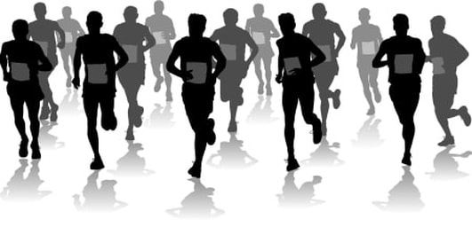
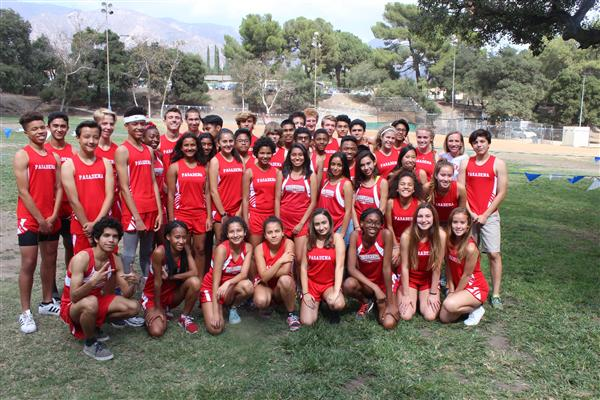

I began Cross Country after a year playing soccer which was during my freshman year. My friend insisted that I join as I would have fun and was not doing anything at the time. Nervous as their were many upperclassman, I thought that I would feel uncomfortable. However when that one upperclassman asked for my name and shook my hand, I knew from there on that my boring high school days were over. As time went on, the team which I was very unfamilar with became a family, people that I could enjoy without having to feel uncomfortable. These people altered my comfort zone in a way that if I had never joined, I would be a completely different person.

